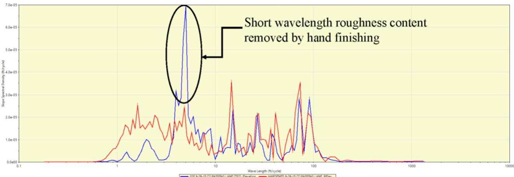
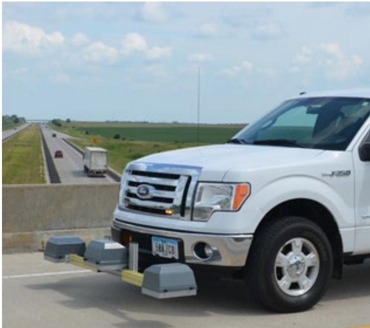

IRI Pavement Profile Measurement
IRI pavement profile measurement is a nondestructive road‑profiling survey that uses a high‑speed inertial profiler equipped with line‑laser (or wide‑spot) sensors traveling along the wheel path to record closely spaced vertical height points of the true surface shape[1][2][4][5]. The raw elevation data are processed through an IRI model in software such as ProVAL, which simulates a standard vehicle suspension and yields the International Roughness Index—a single numeric scale that quantifies longitudinal smoothness (ride quality) and serves as the primary acceptance metric for new and existing asphalt or concrete pavements[1][3][6]. Results are presented as running‑average IRI values over a typical 0.10 mi base length together with power‑spectral‑density plots that reveal dominant wavelengths, enabling engineers to locate sections exceeding agency trigger thresholds (approximately 2–2.7 m/km) and diagnose construction or material deficiencies[3][5][7]. Measurements are normally performed within 24 hours of placement on cleaned surfaces, with the equipment calibrated to AASHTO M 328 and R 56 specifications to ensure repeatable, objective data that support maintenance, rehabilitation, and design decisions[1][6][7].
Sources (7)
Purpose and investigation objectives
The IRI pavement profile measurement evaluates the surface roughness (smoothness) condition of a pavement—whether asphalt or concrete, newly placed, freshly hardened, or existing. It quantifies the longitudinal profile with an International Roughness Index obtained from an inertial profiler. The investigation must answer several questions:
- How closely does the measured IRI represent the ride quality perceived by road users?
- Does the pavement meet current agency acceptance or trigger values, noting that many agencies have moved from the Profilograph Index to the IRI for acceptance?
- Where along the project do IRI values exceed acceptable limits, and which specific profile features (bumps, dips, repeating patterns) are responsible for elevated indices?
- What dominant wavelengths are present in the profile data, as identified by a power‑spectral‑density analysis, indicating construction‑related or material deficiencies?
- Are the profiling equipment and software correctly calibrated and configured, and were measurements taken at an appropriate time (e.g., within 24 hours of paving for concrete surfaces) to avoid bias from temperature‑induced curling or debris?
- Which construction processes (batch uniformity, paver speed, vibrator settings, hand‑finishing) may be influencing the measured roughness, and what corrective actions such as diamond grinding might be required?
- How does the observed roughness compare with other projects, and does it demonstrate that any applied treatments have improved ride quality?
These questions together provide a comprehensive assessment of pavement ride quality and support decisions on maintenance, repair, or acceptance.
“Pavement smoothness is one of the key functional characteristics.” [1][2][3][5][6][7]
[1] — Ch. 9 (pp. 288–290); [2] — App. C (p. 124); [3] — Pavement Roughness Evaluation (p. 21); [5] — Ch. 3 (pp. 61–62); [6] — Ch. 3 (p. 55); [7] — 2. Which features show up in r… (pp. 48–50), Specifications for Initial Smo… (p. 15)
The IRI profile results give engineers a quantitative view of pavement smoothness that agencies now use as the primary acceptance metric, allowing planners to set design targets that promote longer service life and reduce later corrective actions. The running‑average IRI values in the roughness report identify sections where maintenance, rehabilitation or resurfacing is required, while the accompanying power spectral density plot reveals dominant wavelengths so designers can adjust mix gradations, paver settings, joint spacing, and other construction parameters for future projects. Real‑time smoothness monitoring behind the paver shortens the feedback loop from days to hours, providing immediate diagnostic information that helps correct material variability or equipment issues before they become costly defects.
Inertial profiling of the finished pavement will be performed within 24 hours of paving, and the resulting profiles are analyzed using ProVAL, and a power spectral density (PSD) analysis will be performed to identify any dominant wavelengths that appear in the profiles. Finishing procedures and processes may be adjusted to correct any deficiencies identified by the profile analyses.
Roughness is a core factor in the decision to rehabilitate, resurface, or reconstruct any pavement; by quantifying concrete overlay roughness periodically, engineers can track an overlay’s functional condition and project when it may require intervention. A pavement’s IRI or other smoothness index value helps decision‑makers program repair strategies and ultimately signals whether the overlay has reached the end of its useful life.
High‑speed profiling provides a longitudinal profile along the wheel paths together with ride‑quality information such as faulting at joints and cracks, which are good indicators of pavement performance. Since the HSP operates at highway speed, the advantage of this device is there is faster data collection without the need for traffic control, lane closures, safety measures, and their inherent costs.
The IRI values generated by an inertial profiling system give engineers a quantitative map of ride quality that can be directly linked to design and maintenance actions; by collecting a representative index for each 0.1‑mile segment in every lane, planners can pinpoint sections where roughness exceeds acceptable limits and prioritize resurfacing or slab replacement. Because the equipment must be calibrated and certified according to AASHTO standards, the resulting data are reliable enough to justify investment decisions, and repeat runs capture temperature‑induced profile changes that might otherwise mask true distress. The International Roughness Index quantifies the true pavement profile on a single numeric scale, allowing direct comparison to FHWA‑defined thresholds for good, fair, or poor ride quality.
Because the IRI provides an objective, quantifiable picture of ride quality, its values become a primary input for setting smoothness targets during planning and defining design criteria for different facility types. The IRI is a more objective measure of ride quality or how a vehicle responds to the pavement profile than a straightedge or profilograph, and inertial profilers provide the best representation of the actual pavement profile for the interpretation of ride quality. By measuring IRI soon after construction—ideally each paving shift—engineers obtain timely feedback that reveals where the current mix design, equipment settings, or joint placement are affecting smoothness; timely collection of hardened‑pavement profile data is critical for assessing the impacts of various project features and paving processes on pavement smoothness. The Smoothness Assurance Module (SAM) provides a grinding simulation tool that generates customizable grinding plans, directly informing rehabilitation strategies. [1][2][3][4][5][6][7]
The following figure illustrates a real-time smoothness measurement device mounted to the back of a paver.
 Construction crew performing real-time smoothness measurement on a fresh concrete pavement. [2]
Construction crew performing real-time smoothness measurement on a fresh concrete pavement. [2]
The image shows several workers in high-visibility safety gear standing and kneeling beside a newly paved concrete surface, with one worker operating a handheld device near the ground.
[1] — Ch. 9 (pp. 288–290); [2] — App. C (p. 124); [3] — Pavement Roughness Evaluation (p. 21); [4] — Ch. 4 (pp. 241–242); [5] — Ch. 3 (pp. 61–62); [6] — Ch. 3 (pp. 55–57); [7] — 2. Which features show up in r… (pp. 48–50), SMOOTHNESS MEASUREMENTS (p. 46), Specifications for Initial Smo… (p. 15)
Scope and applicability
The guides agree that IRI profiling with an inertial profiler is appropriate for a broad spectrum of concrete pavements. “IRI profiling with an inertial profiler and IRI processing in ProVAL is appropriate for assessing the smoothness of newly placed concrete pavements,” and “I RI pavement profile measurement is suitable for evaluating the roughness of concrete overlay pavements and, by extension, any concrete pavement in a network.” The method applies to jointed concrete pavements, short‑slab sections, and overlays regardless of underlying layers or specific distresses because “the IRI is a property of the true pavement profile, and as such can be measured with any valid profiler.” Textured surfaces—longitudinal grooves, tines, or diamond‑ground finishes—are also covered: “IRI profiling is suitable for concrete pavements, particularly those that have textured surfaces such as longitudinal grooves, tines, or diamond‑ground finishes, because a line‑laser inertial profiler captures the true tire footprint on these surfaces,” and “When measuring roughness on concrete pavements with textured surfaces, it is important that the roughness be measured with a line laser instead of a spot laser.” The technique can be used on high‑speed highways as well as lower‑speed or urban roads; “Lower-speed and/or urban pavement smoothness requirements may not need to be as stringent as those of high‑speed facilities,” and “Smoothness requirements may need to be relaxed for lane additions (paving next to existing pavement) and concrete overlays where there is little control over the smoothness of the underlying surface.” Site conditions that influence measurement are acknowledged. Daily temperature cycles and associated slab curling or moisture warping are noted as concerns: “One concern when testing on concrete pavements is the effect of daily temperature cycles on the measured roughness… slab curling effects may be introduced that may cause significant variations in the measured pavement profile over the course of the day,” and “A particular concern when testing on concrete pavements is the effect of daily temperature cycles on the measured roughness,” which is most pronounced on short‑concrete slabs and may produce the highest roughness values in early‑morning hours.” The surface must be free of debris: “The pavement surface should be clear of foreign objects and debris (saw slurry, rocks, dirt, etc.) that may artificially impact IRI.” Roughness remains the primary factor for maintenance decisions: “Roughness is a core factor in the decision to rehabilitate, resurface, or reconstruct any pavement, including concrete overlays,” and “A pavement’s IRI or other smoothness index value helps decision‑makers program repair strategies and ultimately signals whether the overlay has reached the end of its useful life.” Trigger values are used without special adjustments: “No special consideration is necessary to use IRI trigger values for determining concrete overlay interventions.” Acceptable ride quality thresholds are cited, with a break point near 2 m/km and an acceptable range up to 2.7 m/km: “The approximate break point between "rough" and "smooth" concrete pavements is often considered to be 2 m/km (125 in/mi).” and “FHWA has presented guidelines in which an "acceptable" ride quality for highway pavements is defined by an IRI range of 0 to 2.7 m/km (0 to 170 in/mi).” [1][3][5][6][7]
[1] — Ch. 9 (pp. 289–290); [3] — Pavement Roughness Evaluation (p. 21); [5] — Ch. 3 (pp. 61–62); [6] — Ch. 3 (pp. 56–57); [7] — 2. Which features show up in r… (pp. 48–49), Specifications for Initial Smo… (p. 15)
The IRI profile derived from inertial‑profiler data is a trusted indicator of overall roughness, but its usefulness is limited by several practical factors. First, the index is only available after raw measurements are processed through specialized software and a report is compiled, which can take many hours; therefore it cannot provide immediate feedback on construction problems. When rapid diagnosis of material variability or paver adjustments is required—within one to two hours after paving—a complementary real‑time smoothness measurement taken directly behind the paver should be employed, recognizing that this does not replace the formal acceptance test.
On concrete surfaces, sensor selection matters: conventional spot lasers can drift in and out of surface grooves on longitudinally grooved, tined, or diamond‑ground textures, producing false roughness readings. A line laser whose footprint matches a tire is recommended for textured concrete to obtain more representative data. Additionally, daily temperature cycles cause slab curling and moisture warping that alter the measured profile, especially on short concrete sections where peak roughness often occurs in early morning hours. Because equipment may capture only a single wheel path, lane‑specific variations can be missed; traversing each lane (or both wheel paths) and confirming calibration are essential before relying solely on IRI results.
Surface cleanliness also affects reliability: debris such as saw slurry, rocks, or dirt can artificially inflate IRI values. Since no standard correction exists for temperature‑induced changes, a single IRI reading taken at any one time is insufficient when early‑age conditions or significant temperature swings are expected. In those cases, repeat runs at different times of day, response‑type roughness measurements, or correlation with real‑time profiling data should be used to achieve an accurate assessment. [1][5][6][7]
[1] — Ch. 9 (pp. 289–290); [5] — Ch. 3 (pp. 61–62); [6] — Ch. 3 (p. 56); [7] — 2. Which features show up in r… (pp. 48–49)
Existing information and records
Field investigations must resolve several documented gaps in existing IRI profile records. First, daily temperature cycles can induce slab curling that causes the measured roughness to fluctuate over a single day, so repeat profiling at multiple times is required to capture true conditions. Second, on textured concrete surfaces the narrow‑footprint sensor may drift in and out of surface grooves, producing profile variations that are mistakenly interpreted as roughness; verification of laser type and measurement technique is therefore essential. Third, equipment calibration must be confirmed before each survey to eliminate systematic deviations and ensure repeatable IRI values. Fourth, smoothness specifications differ among agencies, creating contradictory requirements and uncertainty about the appropriate profiling procedures. Addressing these uncertainties through targeted field work will close the gaps in the current record base. [5][6][7]
[5] — Ch. 3 (pp. 61–62); [6] — Ch. 3 (p. 56); [7] — 2. Which features show up in r… (pp. 48–49), SMOOTHNESS MEASUREMENTS (p. 46), Specifications for Initial Smo… (p. 15)
Visual inspection and condition assessment
The high‑speed inertial profiler used for IRI pavement profiling records a longitudinal profile along the wheel paths and extracts ride‑quality metrics that directly reveal visible discontinuities such as faulting at joints and surface cracking. These distress features are identified from the recorded profile without lane closures, serving as reliable indicators of overall pavement performance. [4]
The high-speed pavement profiler used to capture these longitudinal profiles is shown below.
High speed pavement profiler vehicle equipped with sensors. [4]
The image displays a white Ford Transit van outfitted with specialized hardware, including roof-mounted sensor arrays and forward-facing measurement devices attached to the front bumper. This device provides a longitudinal profile along the wheel paths and provides ride quality values including faulting at joints and cracks which are good indicators of pavement performance.
[4] — Ch. 4 (pp. 241–242), Ch. 19 (p. 477)
Field measurements and testing
“IRI pavement profile measurement employs nondestructive road‑profiling surveys using inertial profiling equipment. The guides cite both a “lightweight inertial profiler” and a “high‑speed profiler equipped with line lasers and an accelerometer”. These devices travel along the wheel path—“The inertial profiler travels along the pavement with the laser sensors centered on a wheel path collecting profile data.”—and record closely spaced vertical height points after the surface is cleaned (“The pavement should be cleaned prior to testing”). The measurement is typically carried out soon after construction—“Inertial profiling of the finished pavement will be performed within 24 hours of paving”. Modern roughness testing is performed using inertial road profiling systems (IRPSs), which measure actual pavement profiles and not a vehicle response to pavement imperfections (“Modern roughness testing is performed using inertial road profiling systems (IRPSs), which measure actual pavement profiles and not a vehicle response to pavement imperfections.”). The collected raw elevation data are processed in a computer model that “simulates the reaction of a standard vehicle suspension yielding the IRI”, and the results are presented as a running average over a predefined base length (commonly 0.10 mi) (“A roughness report (Figure 9-13) shows the running average for IRI over a predefined base length; 0.10 mi is the most common base length.”).
In addition to inertial profiling, the guides recognize “response‑type road roughness measuring systems (RTRRMS)” that infer roughness from vehicle dynamics, and visual “windshield surveys” that quickly locate zones of severe roughness (“the primary purpose of the survey is to identify areas of severe roughness on a given project”). Both types must be calibrated before use.
When profiling concrete pavements with texture, a line‑laser sensor is required because spot lasers can drift (“When measuring roughness on concrete pavements with textured surfaces, it is important that the roughness be measured with a line laser instead of a spot laser.”). Modern systems are calibrated to “AASHTO M 328, Standard Specification for Inertial Profiler” and certified under “AASHTO R 56, Standard Practice for Certification of Inertial Profiling Systems” to ensure repeatable results.
The raw profiles are analyzed with software such as ProVAL; the guides state that “The resulting profiles will be analyzed using ProVAL, and a power spectral density (PSD) analysis will be performed to identify any dominant wavelengths that appear in the profiles”. A PSD plot (“A power spectral density (PSD) plot (Figure 9-14) shows if there are any predominant repeating wavelengths that are contributing to pavement roughness”) highlights systematic wavelength components that may point to construction issues. The high‑speed inertial profiler also provides “ride quality values including faulting at joints and cracks which are good indicators of pavement performance”, derived from accelerometers (“accelerometers that measure the movement of the vehicle frames”) and laser displacement sensors (“sensors (typically lasers) that record the displacement between the vehicle and the pavement at certain fixed intervals”).
Together, these field tests—cleaned‑surface inertial profiling, RTRRMS response measurement, visual surveys, and PSD analysis—produce the International Roughness Index, a common numeric scale of ride quality (“One example of such an index is the International Roughness Index (IRI), which has become the most widely used statistic to describe pavement roughness.”) that can be correlated across methods (“the IRI provides a common numeric scale of measuring roughness that can be correlated to roughness measurements obtained from both response‑type and inertial‑based profiler systems”).” [1][2][4][5][6][7]
The following figure illustrates how this measurement approach captures specific surface characteristics by comparing power spectral density data for real-time and hardened profiles.

Comparison of power spectral density (PSD) data for real-time and hardened profiles demonstrating that hand finishing removes roughness at the 5 ft wavelength. [7]The figure displays a plot comparing the slope spectral density of pavement profiles measured in real-time versus after hardening, with two distinct curves representing these stages. A prominent peak circled on the graph indicates that hand finishing removes short wavelength roughness content from the surface profile. This reduction in localized roughness directly supports the use of PSD analysis to diagnose construction deficiencies and verify that hand finishing improves short-baselength continuous IRI results.
[1] — Ch. 9 (pp. 288–290); [2] — App. C (p. 124); [4] — Ch. 4 (pp. 241–242), Ch. 19 (p. 477); [5] — Ch. 3 (pp. 61–62); [6] — Ch. 3 (pp. 55–57); [7] — 2. Which features show up in r… (pp. 48–50), SMOOTHNESS MEASUREMENTS (p. 46), Specifications for Initial Smo… (p. 15)
The equipment for IRI pavement profile measurement consists of inertial profilers—lightweight units equipped with wide‑spot or line lasers—and may also include response‑type road roughness measuring systems (RTRRMS). The profiler’s laser sensors are positioned centrally over the wheel path: “The inertial profiler travels along the pavement with the laser sensors centered on a wheel path collecting profile data.” When only one wheel path can be measured, the right wheelpath is recorded. Testing is performed by traversing each lane; the guides state to “traverse the project in each lane and obtain a representative roughness index for each 0.1 mi increment” and also “traverse the project in each lane and obtain a representative roughness index for each 0.16 km (0.1 mi) increment.” Raw data are captured as “a series of closely spaced height measurements” and later processed: “Process the profile data through an IRI model using ProVAL software.” Prior to testing, the surface must be prepared: “The pavement should be cleaned prior to testing” and “The pavement surface should be clear of foreign objects and debris (saw slurry, rocks, dirt, etc.) that may artificially impact IRI.” For concrete surfaces, a line laser is recommended: “a line laser (more representative of the tire footprint) is recommended for use when measuring roughness on textured concrete pavement surfaces.” Because concrete slabs are sensitive to temperature, testing should be repeated at different times of day; the guides note that “On days when the air temperature changes significantly throughout the day, slab curling effects may be introduced that may cause significant variations in the measured pavement profile over the course of the day,” and that “A particular concern when testing on concrete pavements is the effect of daily temperature cycles on the measured roughness.” For jointed concrete sections, “For jointed concrete pavements, changes in IRI may be observed when profiling at different times of day as a result of temperature curling and/or moisture warping.” Profiling is often scheduled after each paving operation: “should be collected after each paving day (or the following day) to provide timely feedback.” [1][5][6][7]
[1] — Ch. 9 (pp. 288–290); [5] — Ch. 3 (pp. 61–62); [6] — Ch. 3 (p. 56); [7] — 2. Which features show up in r… (pp. 48–49)
Structural and functional performance
The IRI pavement profile measurement is performed with a high‑speed profiler that records the longitudinal surface shape along the wheel paths. From this profile the system derives ride‑quality metrics, notably faulting at joints and cracks, which are used as functional condition indicators of pavement performance. While it supplies roughness/ride quality data, the method does not directly measure deflection, load‑transfer efficiency, layer thickness, friction or bearing strength. [4]
The high-speed pavement profiler used to capture these longitudinal surface profiles is shown below.

High-speed pavement profiler vehicle equipped with inertial sensors. [4]The image displays a white pickup truck outfitted with specialized hardware mounted to the front bumper, including multiple sensor housings and an antenna. This apparatus is identified as a high-speed profiler (HSP) that utilizes accelerometers and sensors to record displacement between the vehicle and the pavement at fixed intervals. The device provides a longitudinal profile along the wheel paths to generate ride quality information, allowing for faster data collection without traffic control.
[4] — Ch. 4 (pp. 241–242)
The merged assessment notes that IRI values obtained with inertial profiling are treated as an objective indicator of ride quality and are compared against smoothness‑index trigger limits that embody the anticipated traffic loads and design assumptions. Across the guides, concrete overlays are judged using the same standard thresholds applied to other concrete pavements, yet the guidelines also recognize that threshold levels are not uniform: high‑speed facilities require tighter IRI limits, while lower‑speed or urban routes, as well as lane additions and overlay projects where the underlying surface is less controllable, may be permitted higher values. Regarding remaining service life, one source states that rising IRI values as an overlay approaches its 20‑ to 40‑year design horizon signal the pavement’s nearing end of useful life and trigger repair or reconstruction without modifying the standard limits; the other source does not prescribe explicit service‑life criteria, so remaining life must be inferred from how closely measured IRI approaches the applicable (potentially relaxed) thresholds. [3][7]
[3] — Pavement Roughness Evaluation (p. 21); [7] — Specifications for Initial Smo… (p. 15)
Data interpretation and diagnosis
The guides concur that elevated IRI values on concrete pavements can arise from several distinct mechanisms. Construction‑related deficiencies are repeatedly cited as primary sources of short‑wavelength irregularities; inconsistent concrete gradation, lack of between‑batch uniformity, and non‑uniform delivery speed that leads to paver stops all generate profile disturbances, while improper paver setup (draft/lead settings, vibrator frequency and height, float pan adjustments) and human factors such as inadequate training further contribute. In addition, the guides identify material deterioration caused by cumulative traffic loading combined with long‑term environmental exposure as a progressive source of roughness that becomes more pronounced as the overlay approaches its 20‑ to 40‑year service life. A separate but related environmental mechanism is emphasized: daily temperature fluctuations induce slab‑curling, which can dominate the measured profile and produce the highest IRI values in early‑morning tests; multiple profiling passes at different times are therefore recommended to isolate this effect. Across the sources, inadequate drainage, weak subgrade support, and overloading are not highlighted as likely causes of the observed condition. [1][3][5][6]
The following figure illustrates how these daily temperature fluctuations induce slab-curling by showing the resulting variation in backcalculated k-value.
 Variation in backcalculated k-value due to variation in temperature gradient (Khazanovich and Gotlif 2003). [6]
Variation in backcalculated k-value due to variation in temperature gradient (Khazanovich and Gotlif 2003). [6]
The figure plots the backcalculated modulus of subgrade reaction (k-value) against station location for four distinct times of day, ranging from early morning to late afternoon. Data points collected in the morning show significantly higher k-values compared to those measured later in the day when temperatures are warmer.
[1] — Ch. 9 (pp. 289–290); [3] — Pavement Roughness Evaluation (p. 21); [5] — Ch. 3 (pp. 61–62); [6] — Ch. 3 (p. 56)
Findings, confidence, and next actions
The merged guidance indicates that IRI measurements derived from inertial profiling systems are regarded as a reliable, objective and repeatable index of pavement roughness. Because the IRI is calculated from the true surface profile, it supports judgments about ride quality, driver comfort and long‑term pavement performance, enables identification of zones exceeding smoothness thresholds, facilitates monitoring of concrete overlays for functional condition and timing of repair or grinding actions, and provides a common numeric scale that can be compared across response‑type and inertial profilers. Power‑spectral‑density analysis of the profiles further allows engineers to pinpoint dominant wavelengths linked to construction practices. However, the guides also note several sources of uncertainty: measurement results can vary with temperature‑induced slab curling or moisture warping, calibration drift, single‑wheel‑path surveys, and timing of data collection after placement; surface debris may artificially inflate IRI values; and no confidence limits or standardized correction procedures are provided. Consequently, multiple runs, careful calibration, and quality‑controlled data acquisition are recommended to mitigate these uncertainties. [1][2][3][4][5][6][7]
The figure below illustrates real-time profile data showing how IRI values fluctuate with distance from the paver to the robotic total station.
 Real-time profile data illustrating fluctuation of IRI corresponding to distance from the paver to the robotic total station [7]
Real-time profile data illustrating fluctuation of IRI corresponding to distance from the paver to the robotic total station [7]
The figure displays a line chart plotting IRI (in/mi) against Distance (ft), comparing measurements for the ‘RTS - Right Side’ and ‘RTS - Left Side’.
[1] — Ch. 9 (pp. 288–290); [2] — App. C (p. 124); [3] — Pavement Roughness Evaluation (p. 21); [4] — Ch. 4 (pp. 241–242), Ch. 19 (p. 477); [5] — Ch. 3 (pp. 61–62); [6] — Ch. 3 (pp. 56–57); [7] — 2. Which features show up in r… (pp. 48–50), SMOOTHNESS MEASUREMENTS (p. 46), Specifications for Initial Smo… (p. 15)
After an IRI profile is processed, the next step is to examine the roughness report using the typical 0.10 mi base length to locate high‑IRI sections and to run a power‑spectral‑density (PSD) analysis for dominant wavelengths that may signal joint spacing or paving‑process issues. When problem areas are identified, corrective actions should target construction variables—adjusting paver speed, batch uniformity, vibrator frequency or height, hand‑finishing short‑wavelength roughness, and ensuring proper concrete delivery and trackline stability. Real‑time smoothness monitoring directly behind the paver can be employed to shorten the feedback loop from 24–48 hours to a few hours, allowing immediate tuning of material or equipment settings before cure.
Inertial profiling should be performed within 24 hours of paving, with the resulting profiles analyzed using ProVAL and PSD analysis to reveal any repeating wavelength irregularities; finishing procedures may then be adjusted to correct identified deficiencies. The crew must collect hardened‑pavement profile data promptly after each paving shift, verify that the surface is clear of foreign objects and debris, and compare IRI results to any real‑time system (RTS) readings taken during placement. Any significant deviation or unexpected IRI spike should trigger a review of paving parameters for subsequent work.
Because concrete pavements are sensitive to daily temperature cycles, agencies should first verify equipment calibration and then conduct additional profile runs in each lane for every 0.16 km segment at multiple times of day; these repeat measurements help separate temperature‑induced variation from true surface distress before preservation actions are planned.
Engineers should institute regular roughness monitoring by repeating profile measurements at defined intervals, comparing the obtained IRI values against established trigger thresholds that drive decisions to rehabilitate, resurface, or reconstruct. ProVAL’s Ride Quality module or the Smoothness Assurance Module (SAM) can isolate specific bumps or dips; SAM’s grinding simulation tool enables design of a customized diamond‑grinding plan prior to field work. Periodic re‑profiling with the same interval analysis should be scheduled to confirm that corrective grinding and any process changes have achieved the desired smoothness targets. [1][2][3][6][7]
The following figure illustrates a sample output from this process.
 ProVAL power spectral density plot showing a repeating wavelength at 15 ft that corresponds to joint spacing [1]
ProVAL power spectral density plot showing a repeating wavelength at 15 ft that corresponds to joint spacing [1]
The figure displays a power-spectral-density plot with slope spectral density on the vertical axis and wave length on the horizontal axis.
[1] — Ch. 9 (pp. 289–290); [2] — App. C (p. 124); [3] — Pavement Roughness Evaluation (p. 21); [6] — Ch. 3 (p. 56); [7] — 2. Which features show up in r… (pp. 48–50)
References
- Integrated Materials and Construction Practices for Concrete Pavement: A State-of-the-Practice Manual (2nd edition IMCP Manual, 2019) [link]
- Quality Control for Concrete Paving: A Tool for Agency and Industry (Optimized for fast web viewing–2021) [link]
- Concrete Overlay Repair and Replacement Strategies (Guide–Optimized for fast web viewing–2024) [link]
- Guide for Concrete Pavement Distress Assessments and Solutions: Identification, Causes, Prevention, and Repair (Distress Manual–2018) [link]
- Concrete Pavement Preservation Guide (3rd Edition–Optimized for fast web viewing–2022) [link]
- Concrete Pavement Preservation Workshop Reference Manual (2008) [link]
- Implementation of Best Practices for Concrete Pavements: Guidelines for Specifying and Achieving Smooth Concrete Pavements (2019) [link]